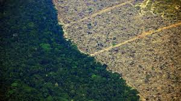

<div class="row">
    <div class="col-xs-6 col-sm-3 col-md-3">
      <div class="team-wrapper-big wow bounceInUp" data-wow-delay="0.2s">
        <div class="team-wrapper-overlay">
          <h5>La deforestación </h5>
          <p>El planeta perdió un área de cobertura arbórea más grande que el Reino Unido en 2020, incluidas más de 4.2 millones de hectáreas de bosques tropicales primarios, según datos publicados por la Universidad de Maryland.
            La pérdida de cobertura arbórea aumentó tanto en los trópicos como en las regiones templadas, pero la pérdida fue mayor en los bosques tropicales primarios, sobre todo por el aumento de la deforestación y los incendios en la Amazonía, la selva tropical más grande de la Tierra.
            Los datos, que ahora están disponibles en el Global Forest Watch del World Resource Institute, indican que la pérdida de bosques se mantuvo alta en el período inmediatamente posterior a la pandemia, pero “no muestra cambios sistémicos obvios como resultado de la pandemia del COVID-19”, según WRI.
            La destrucción de los bosques tropicales primarios, los ecosistemas con mayor diversidad biológica del mundo, liberó 2.64 mil millones de toneladas de carbono, una cantidad equivalente a las emisiones anuales de 570 millones de automóviles.</p>
          
        </div>
        
      </div>
    </div>
